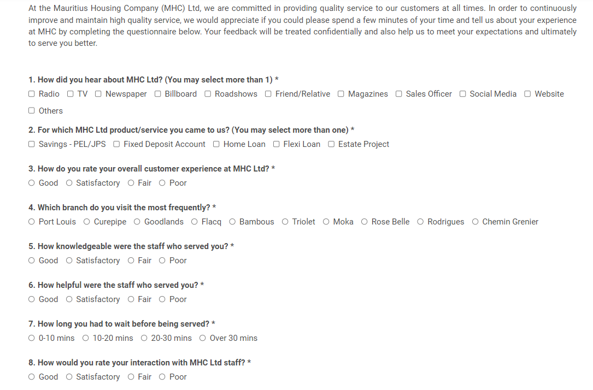

✥Unit 6: Questionnaire Design
Outcomes from the Team Exercises and activites
The aim of this module is to provide necessary skills to effectively design questionnaires for data collection. By differentiating between questionnaires and surveys, the module emphasizes the significance of questionnaires as versatile tools for acquiring information. It covers methods for enhancing response rates, strategies for question design, and techniques for analysing responses. It also provides understanding on how to discern between high-quality and poor questionnaires, construct questionnaires that yield valuable data for their investigations, and analyse the collected data to inform research findings.
Discussion:
Questionnaires and surveys are pivotal in research methodologies for gathering data efficiently and effectively. The distinction between them, as outlined by platforms like QuestionPro and SurveyMonkey and further illuminated by scholarly works, reveals their nuanced applications in both qualitative and quantitative research. Questionnaires, whether aiming for depth in qualitative studies with open-ended questions or breadth in quantitative studies through closed-ended questions, present a versatile means of data collection. However, researchers face challenges such as low response rates, typically below 10%, and the potential for biased responses, necessitating careful design and distribution strategies (Fowler, 2014).
Survey design principles advocate for clarity, conciseness, and relevance in question formulation, emphasizing the importance of pre-testing to refine questions and ensure respondent understanding (Bradburn, Sudman, & Wansink, 2004). Surveys, encompassing the questionnaire and the broader process of data collection, analysis, and interpretation, demand a comprehensive approach that considers the logical flow of questions and tailors language to the target demographic. This holistic perspective on surveys underscores their capacity not just to collect data but to generate actionable insights through rigorous analysis.
The integration of questionnaires within the survey methodology allows for structured data collection, enabling significant insights into study populations. Nonetheless, the success of these instruments hinges on strategic question selection, thoughtful design, and a nuanced understanding of the demographic targeted. The challenges of ensuring participation and minimizing biases underscore the need for meticulous planning and execution in research design.
In sum, questionnaires and surveys, as delineated in academic literature, are essential tools in the researcher's arsenal, offering a pathway to understanding complex human attitudes, behaviors, and perceptions. The effectiveness of these tools relies on a balance between methodological rigor and practical considerations of design and implementation.
Formative Activities-
e-Portfolio update: Data Collection
Think about which data collection tool will be suitable for your area of investigation (in this module and/or in your Project module). How will you collect it and what analysis would you hope to perform? How will this answer your research question? This should also be included in the presentation of your Project Proposal in Unit 10
Answer:
Project Proposal: Optimizing Machine Learning for Twitter Sentiment Analysis
Research Question
How can optimizing machine learning improve sentiment analysis accuracy on Twitter data?
Data Collection Tool
Twitter API via Tweepy for extracting tweets based on keywords, hashtags, or user IDs.
Data Collection Method
Collect tweets using specific keywords/hashtags related to your research area.
Data Analysis Techniques
- Preprocessing: Clean tweets to remove noise.
- Feature Extraction: Use TF-IDF or word embeddings to prepare data for analysis.
- Machine Learning Models: Experiment with models like Naive Bayes, SVM, and LSTM or BERT for deep learning.
- Optimization Techniques: Apply hyperparameter tuning, feature selection, and model ensembling to improve performance.
Expected Analysis
Categorize tweets into sentiments (positive, negative, neutral). Evaluate models based on accuracy, precision, recall, F1 score, and efficiency. Identify the most effective machine learning model and optimization technique.
Project Proposal Presentation
Define the research question and its significance. Detail the chosen data collection tools and methods. Outline the analysis techniques and expected outcomes. Explain how the findings answer the research question.
Formative Activities-
Wiki Activity: Questionnaires
Find a questionnaire and critique the design, both the format and the questions used. Consider areas such as ‘why is this question included?’, ‘is the form of the question appropriate?’ etc. How can you improve the questionnaire? Put your analysis in the module wiki and comment on others’ analyses.
Answer:
The Mauritius Housing Company (MHC) Ltd survey is designed to gather customer feedback on various aspects of their service. It covers how customers learn about MHC, the specific products, or services they are interested in, their overall experience, staff interaction, waiting times, and the likelihood of recommending MHC. It also inquiries about the information provided on the MHC website and asks for suggestions on additional services or products.Below is the customer satisfaction survey of the MHC (http://www.mhc.mu/customer-care/customer-satisfaction-survey):-
Critique:
- Range of Options: The survey provides a broad range of options for most questions, which is good for gathering specific feedback.
- Rating Scale Consistency: The use of a consistent rating scale (Good, Satisfactory, Fair, Poor) helps in standardizing responses but might lack nuance.
- Open-ended Question: The inclusion of an open-ended question for suggestions is positive, allowing for detailed feedback.
- Contact Information (Optional): Requesting contact information optionally is respectful of respondent privacy.
Improvement Suggestions:
- Scale Nuance: Introducing a more nuanced scale (e.g., a 1-5 or 1-10 scale) could capture more detailed feedback.
- Question on Improvements: Adding questions specifically about areas for improvement could provide more actionable insights.
- Digital Accessibility: Ensuring the survey is easily accessible and navigable on various digital platforms could increase response rates.
Also, for an island like Mauritius, the survey could specifically address local factors such as accessibility to branches given the geographic constraints, relevance of services to the island's unique economic and cultural context, and inclusion of local languages to improve accessibility and comfort for respondents. This specificity helps in tailoring services more closely to the needs and preferences of Mauritian customers, fostering stronger community ties and ensuring services are relevant and beneficial to the local population.
Reflection & Practical Use:
As a data analyst in the hospitality industry, the insights from Unit 6 on Questionnaire Design have been particularly transformative for my approach to collecting and analysing customer feedback. Understanding the nuanced difference between questionnaires and surveys, as highlighted by scholarly references and platforms like QuestionPro and SurveyMonkey, has allowed me to refine our data collection methods to gather more actionable insights. The emphasis on the importance of question design, including the balance between open and closed questions, has been crucial in enhancing our response rates, which have historically been lower than desired.
Implementing the module's strategies for pre-testing questionnaires has significantly improved the clarity and relevance of our questions, leading to higher quality data. Moreover, tailoring questions to our specific demographic within the hospitality sector has enabled us to derive more meaningful insights into customer satisfaction and preferences. This knowledge has been instrumental in informing our strategic decisions and improving our services. The challenge of low response rates and potential biases remains, but with the techniques learned, I feel better equipped to address these issues and leverage questionnaires and surveys more effectively in our research endeavours.
References:
- Bradburn, N. M., Sudman, S., & Wansink, B. (2004). Asking Questions: The Definitive Guide to Questionnaire Design -- For Market Research, Political Polls, and Social and Health Questionnaires. San Francisco, CA: Jossey-Bass.
- Survey vs questionnaire: What’s the difference? SurveyMonkey. Available at: https://www.surveymonkey.com/mp/survey-vs-questionnaire/ (Accessed: 30 January 2024).
- Bhat, A. (2023) Questionnaire vs survey: Is there a difference? QuestionPro, QuestionPro. Available at: https://www.questionpro.com/blog/questionnaire-vs-survey-difference/ (Accessed: 30 January 2024).
- Fowler, F. J. (2014). Survey Research Methods. 5th ed. Thousand Oaks, CA: SAGE Publications.